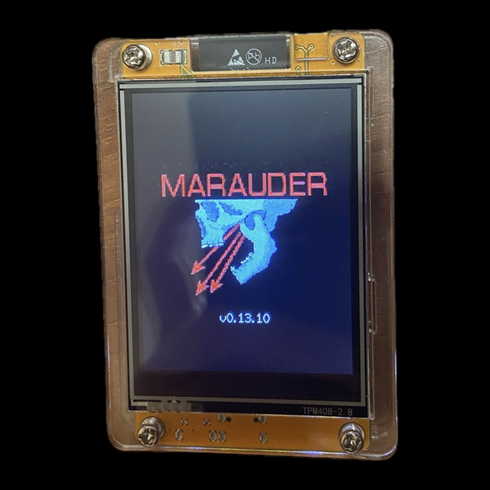
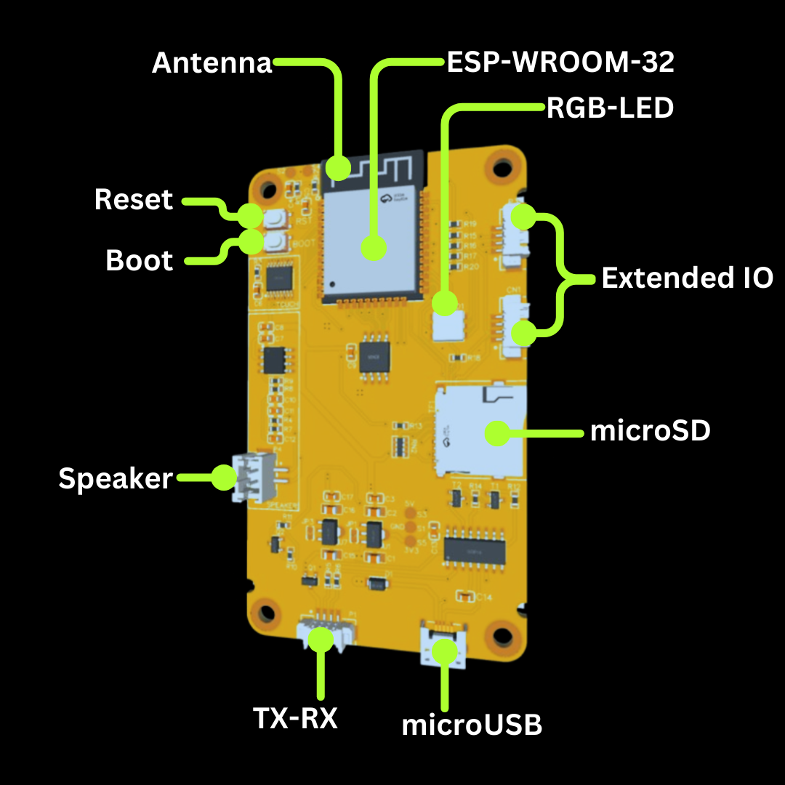

How to build a powerful WiFi/Bluetooth hacking tool with only 3€
Discover how to turn an ESP32 development board into a powerful wireless hacking tool!
Learn how to use it for WiFi and Bluetooth network attacks with this affordable DIY project.
No expertise needed to get started!
The ESP32-Marauder offers a wide range of features, including WiFi network scanning, deauthentication attacks, Bluetooth device scanning, and packet injection. It's a versatile tool for security testing and exploring vulnerabilities in wireless networks. With an intuitive interface and multiple attack modes, it's the perfect addition to any hacker’s toolkit.
Credits: This project is heavily inspired by the amazing work of justcallmekoko, the creator of the ESP32-Marauder firmware. His contributions to the open-source community have made wireless security testing more accessible for everyone. Be sure to check out his repository for more advanced features and updates.
In many countries, performing attacks on wireless networks, such as WiFi and Bluetooth, is illegal and punishable by law. The information provided in this post is for educational purposes only, and mr4h4 assumes no responsibility for the improper use of this information. It is your responsibility to understand and comply with local laws before attempting any of the techniques described.
How to Build It
The first thing you need, is to get a ESP32 module. I recommend to adquire a ESP32-2432S028 DevBoard.
(most known as "Cheap Yellow Display")
You can easily find it in stores like Amazon or AliExpress for a price between 3 and 10 euros. This development board comes with the ESP32 module pre-installed and also includes a touchscreen, an integrated antenna, space for microSD cards, and both microUSB and USB-TypeC connectors.
